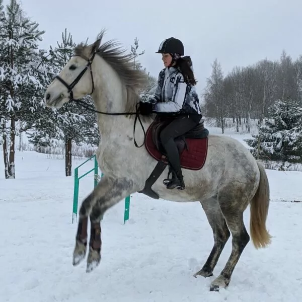
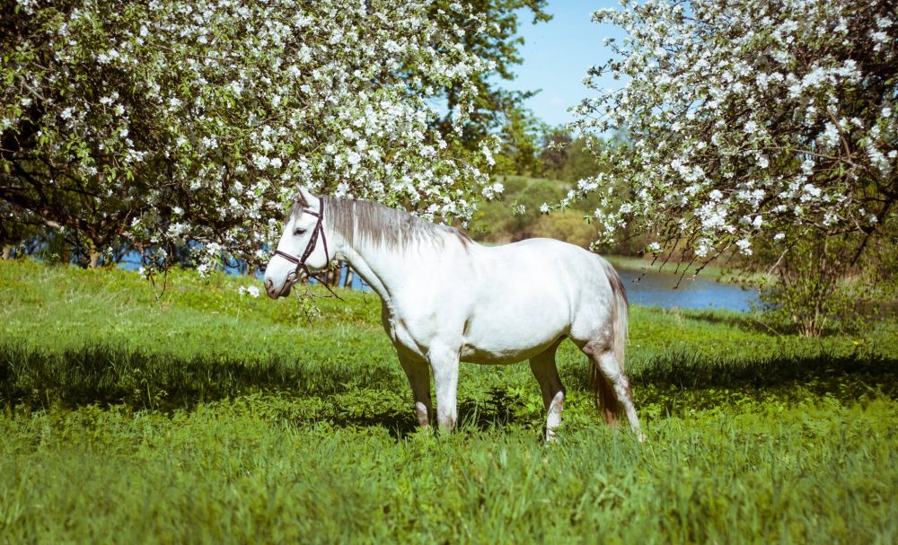

Mīti par zirgiem:
atpakaļ
Mīts: Zirgu izjāde ir tikai sēdvieta
Jautājiet ikvienam,kas jāj,un viņi jums pateiks,ka izjādes ir daudz vairāk nekā tikai sēdes.
Jūsu muskuļi jums pateiks,ka pēc pirmā reize,kad jājat ar zirgu!Tiešām labi jājnieki padara izjādes vieglu izskatu.
šķiet,ka zirgs to izturēs pēc saviem ieskatiem

Mīts:Pārslodze zirgam
Ja ziemas laikā varat nodrošināt zirgam regulāras kustības,tad
visticamāk tam fiziskā forma tikai nedaudz samazināsies,bet ja jūsu zirgs ziemā
ir „staļļa kartupelis”,tad jārīkojas piesardzīgi.Zirgam nedrīkst būt pārslodze,tas
jānodarbina vieglos treniņos,pretējā gadījumā var rēķināties ar dažādām muskuļu traumām.

Paldies par uzmanību!